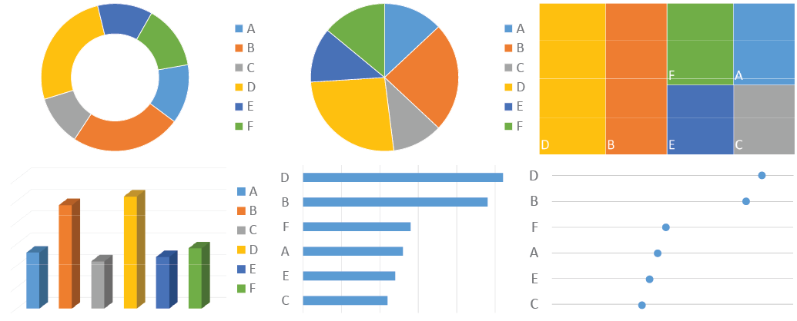

Three laws of visual communication
three laws
principles
for the quantitative scientist. Effective visual communication follows three laws: 1.) Have a clear purpose; 2.) Show the data clearly; and 3.) Make the message obvious. These three laws correspond to the three main ingredients of any quantitative work: purpose, data, and message. Getting these right leads to success; failing in any of them leads to overall failure.
Law 1: Have a clear purpose
Why? (Sinek 2009; Bonate 2014) What is the purpose of this display or that communication? Doumont (Jean L. Doumont 2002) states this as the “zeroth law” of professional communication, “a principle so obvious that it had long been overlooked”. Be clear and explicit about what you want to achieve. Is it to explore some data, to convey an inferential analysis, to deliver a message, convince an audience, or support a decision? It may be a mixture of these – for example, even seemingly simple exploratory plots should serve some (perhaps implicit) decision (e.g. on how to explore further). Every graph, and more generally every communication, must be tailored to its specific purpose.
It helps to carve out the scientific question you are trying to address, ideally in discussion with partners, and to write it down explicitly. Try not to look at any data before. This is the concept of “question-based visualizations”(Vandemeulebroecke et al. 2019): let the scientific question determine what data to display and how. (For example, combine data from different domains if it helps address the question effectively. Do not only produce standard outputs by data domain – a display should be determined by the question it addresses, not by the way the data is organized.). As Diggle (Diggle 2018) put it, we “analyze problems, not data”. This does not mean that the question could not be refined after seeing the data. We may well iterate over the problem space and the solution space – as long as we do it consciously. Senn (Senn 2008) illustrates many examples of wrongly framed research questions. A common one is to focus on the wrong comparison, such as comparing a post-treatment value to the corresponding baseline value instead of to the value under a control treatment. Most quantitative graphs display comparisons (Gelman, Pasarica, and Dodhia 2002), and it always helps to ask “compared to what?” (Tufte 1986). If the comparison is not clear to the author, it will also not be clear to the reader.
Part of this first law (and of the third, see below) is also to be clear about your audience. Then, to adapt to your audience. Do not assume it will adapt to you. You cannot control your audience, but you can control what information and messages you deliver to it, and how. Is your audience just you (trying to see patterns in data), you in a few years (trying to remember what you did), quantitative experts such as your peers (interested in your methods), subject matter experts (eager for your main message), decision-makers (headlines only), or a mixture of these? Your visual communication will need to be different accordingly. Your communication (plot, presentation, report) is for the audience, not for you.
Clarity on the purpose and the scientific question of interest will help choose appropriate quantitative methods to address them. This, plus clarity on your audience, will help define the key messages and how to deliver them. (On the aspect of delivery see also Law 3 below.)
Of note, this first law is so important that it may occasionally defy other good principles. If your primary goal is to catch attention, then you may choose an iconic graphical representation that does this well, even if it violates some of the recommendations given further below (Gelman and Unwin 2013). However, you should never distort the data.
Law 2: Show the data clearly
This is Tufte’s maxim (Tufte 1986): “Above all else, show the data”. Show it accurately and clearly. This law has several faces:
Simplify! “Simplify to clarify” (B. Wong 2011). It is the prime task of quantitative scientists to make the complex simple: reveal structure in data through models, make inference through analyses, distill and convey conclusions through (visual) communication. Choose the simplest appropriate graph type; prefer familiar designs over fancy ones (see also the Cleveland-McGill effectiveness ranking in Law 3 below). Avoid fake dimensions. Make your plot “as simple as it can be, but not simpler” (attributed to Albert Einstein; also “Occam’s razor” or the law of parsimony). “Understand, edit and simplify the information and design with your readers in mind” (D. M. Wong 2010). Do not be confused: it is hard to make things simple. This is an iterative process: “edit and revise” (Tufte 1986), and repeat.
Maximize the data-to-ink ratio (also “data density index” (Tufte 1986)) within reason. Maximize the signal over the noise by removing the noise: remove anything that distracts from the purpose of the graph. Nothing is neutral: the choice of symbols or colors, background, fonts, line style, annotations. These elements are noise if they do not serve a clear purpose. Choose them wisely and parsimoniously; make the data stand out. Do not trust defaults in graphical software packages. Often, intelligent use of white space can structure a display better than a lot of ink. (The same holds for tables: these are often most effectively structured by reserving black lines for the horizontal direction and using simple alignment in the vertical direction.) Never clutter your graph with “chart junk” (Tufte 1997).
Display the relevant data directly. In a quantitative workflow, this often means to look at the raw data and not just rely on summary statistics. Cabanski8 illustrates this with nine datasets that show completely different patterns despite identical marginal means, standard deviations and correlation coefficients (see also Anscombe (Anscombe 1973) and Matejka and Fitzmaurice (Matejka and Fitzmaurice 2017)). Ask yourself what is the best way of summarizing the relevant features of the data; it may not be the mean +/- standard error. When fitting a (statistical, compartmental, mechanistic etc.) model to the data to draw inference or make predictions, model-derived quantities may be the relevant data to display. In this case a plot of the raw data may be misleading if it does not account for important covariates. In a final communication, display concisely what best supports your message (see also below, Law 3).
Law 3: Make the message obvious
If the second law focused on the data (with a tendency to reduce noise), then the third is all about the message (and amplifying the signal). This assumes that you do have a message to tell, and that this message is clear at least to yourself. If there is any doubt on this, return to the first law.
The third law mandates to make your message as obvious as possible. Quoting Krzywinski and Cairo (Krzywinski and Cairo 2013), “inviting readers to draw their own conclusions is risky”. Do not only make your message easy to get. Make it impossible to miss. This extends beyond graphical elements and involves all aspects of communication.
Clarity on your audience, mentioned already in the first law, is also a prerequisite for the third. It is needed for carving out the message to tell (Law 1) and for adapting its way of delivery (Law 3).
Specific examples for the third law include the following:
Choose wisely how to encode the data you display. Color and area are good for drawing attention, but a viewer can decode positions on a common scale much more easily and accurately. Consider the effectiveness ranking of graphical attributes for encoding numerical values, as proposed by Cleveland and McGill [Cleveland (1985); Cleveland (1984); Cleveland.McGill1984; Cleveland1987; Cleveland and McGill (1985)] (see also Cairo (Cairo 2016), Munzner (Munzner 2015), and Heer and Bostock (Heer and Bostock 2010)). See here for an overview of this ranking.
Exploit pre-attentive processing as much as possible (Few 2012; Ware 2004). Some graphical features “jump to the eye” while others require careful inspection. Consider this in your choice of how to encode the data (Cleveland-McGill effectiveness ranking, see above) and in your choice of symbols, colors, line types etc. See here for an illustration.
Avoid mental arithmetic. If differences or ratios are the main interest, show them directly. If both raw values and differences are of interest, consider showing both.
Exploit the principles of visual grouping (B. Wong 2010). Graphical entities are most effectively grouped by enclosure, connection, proximity and similarity (in this order). That is, similar objects are perceived as belonging together, as are objects close to each other, connected by lines, or enclosed in a common subspace. See Figure 3 for an illustration: these mechanisms can provide contextual information to a plot in a simple yet powerful way.
Minimize the viewer’s eye movement. Place elements that are to be compared close to each other. Prefer direct labelling over a legend. See also here.
Draw the reader’s attention to the main points. Use appropriate graphical features (e.g. bold or colored highlighting, reference lines, circling etc.). Follow up with explicit labelling (e.g. “treatment A outperforms treatment B by X%”).
Add meaningful information to a graph to tell the whole story. E.g., include reference lines, benchmark effects, inferences etc.
Use effective redundancy. Convey the same message through multiple channels, to amplify it and give the audience a second chance to get it. Use words and pictures in unison (J. L. Doumont 2009). E.g., in addition to showing the data, consider annotating the “good” or “bad” axis direction, and state what is seen in plain words. Do not confuse redundancy (pointlessly cluttering the graph) with effective redundancy (conveying a message through multiple complementary channels).
Let every plot stand on its own. Use informative labels and captions, and explain abbreviations. Do not require the reader to search through text in order to understand a figure.
Always add a title to your plot. Phrase it as a conclusion, not a description (e.g. “plasma concentration depends on body weight” rather than “plot of plasma concentration vs. body weight”).
References
Anscombe, F. J. 1973. “Graphs in Statistical Analysis.” The American Statistician 27 (1): 17–21. http://www.jstor.org/stable/2682899.
Bonate, Peter L. 2014. Be a Model Communicator and Sell Your Models to Anyone. Published by Peter Bonate. https://www.amazon.com/Be-Model-Communicator-Models-2014-10-06/dp/B01LP3SHNM.
Cairo, Alberto. 2016. The Truthful Art: Data, Charts, and Maps for Communication. 1st ed. Thousand Oaks, CA, USA: New Riders Publishing.
Cleveland, William S. 1984. “Graphs in Scientific Publications.” The American Statistician 38 (4): 261–69. https://doi.org/10.1080/00031305.1984.10483223.
———. 1985. The Elements of Graphing Data. Belmont, CA, USA: Wadsworth Publ. Co.
Cleveland, William S., and Robert McGill. 1985. “Graphical Perception and Graphical Methods for Analyzing Scientific Data.” Science 229 (4716): 828–33. https://doi.org/10.1126/science.229.4716.828.
Diggle, Peter J. 2018. “Analyse Problems, Not Data: One World, One Health.” Spatial Statistics 28 (December): 4–7. https://doi.org/10.1016/j.spasta.2018.10.003.
Doumont, J. L. 2009. Trees, Maps, and Theorems: Effective Communication for Rational Minds. Principiae. https://books.google.com/books?id=O2dFPgAACAAJ.
Doumont, Jean L. 2002. “The Three Laws of Professional Communication.” IEEE Transactions on Professional Communication 45 (4): 291–96. https://doi.org/10.1109/TPC.2002.805164.
Few, Stephen. 2012. Show Me the Numbers: Designing Tables and Graphs to Enlighten. 2nd ed. USA: Analytics Press.
Gelman, Andrew, Cristian Pasarica, and Rahul Dodhia. 2002. “Let’s Practice What We Preach.” The American Statistician 56 (2): 121–30. https://doi.org/10.1198/000313002317572790.
Gelman, Andrew, and Antony Unwin. 2013. “Infovis and Statistical Graphics: Different Goals, Different Looks.” Journal of Computational and Graphical Statistics 22 (1): 2–28. https://doi.org/10.1080/10618600.2012.761137.
Heer, Jeffrey, and Michael Bostock. 2010. “Crowdsourcing Graphical Perception: Using Mechanical Turk to Assess Visualization Design.” In Proceedings of the SIGCHI Conference on Human Factors in Computing Systems, 203–12. CHI ’10. New York, NY, USA: ACM. https://doi.org/10.1145/1753326.1753357.
Krzywinski, M., and A. Cairo. 2013. “Reply to: "Against Storytelling of Scientific Results".” Nature Methods 10: 1046. https://www.nature.com/articles/nmeth.2699.
Matejka, Justin, and George Fitzmaurice. 2017. “Same Stats, Different Graphs: Generating Datasets with Varied Appearance and Identical Statistics Through Simulated Annealing.” In Proceedings of the 2017 CHI Conference on Human Factors in Computing Systems, 1290–94. CHI ’17. New York, NY, USA: ACM. https://doi.org/10.1145/3025453.3025912.
Munzner, Tamara. 2015. Visualization Analysis and Design. AK Peters Visualization Series. CRC Press. https://books.google.de/books?id=NfkYCwAAQBAJ.
Senn, S. S. 2008. Statistical Issues in Drug Development. Statistics in Practice. Wiley. https://books.google.com/books?id=cmMbCcqnAXcC.
Sinek, S. 2009. Start with Why: How Great Leaders Inspire Everyone to Take Action. Penguin Publishing Group. https://books.google.com/books?id=iyw6ul1x\_n8C.
Tufte, Edward R. 1986. The Visual Display of Quantitative Information. Cheshire, CT, USA: Graphics Press.
———. 1997. Visual Explanations: Images and Quantities, Evidence and Narrative. Cheshire, CT, USA: Graphics Press.
Vandemeulebroecke, Marc, Mark Baillie, David Carr, Linda Kanitra, Alison Margolskee, Andrew Wright, and Baldur Magnusson. 2019. “How Can We Make Better Graphs? An Initiative to Increase the Graphical Expertise and Productivity of Quantitative Scientists.” Pharmaceutical Statistics 18 (1): 106–14. https://doi.org/10.1002/pst.1912.
Wainer, Howard. 1984. “How to Display Data Badly.” The American Statistician 38 (2): 137–47. https://doi.org/10.1080/00031305.1984.10483186.
Ware, Colin. 2004. Information Visualization: Perception for Design. San Francisco, CA, USA: Morgan Kaufmann Publishers Inc.
Wong, Bang. 2010. “Points of View: Gestalt Principles (Part 1).” Nature Methods 7: 863–63.
———. 2011. “Points of View: Simplify to Clarify.” Nature Methods 8 (8): 611. https://www.nature.com/articles/nmeth.1660.
Wong, D. M. 2010. The Wall Street Journal Guide to Information Graphics: The Dos and Don’ts of Presenting Data, Facts, and Figures. W.W. Norton & Company. https://books.google.com/books?id=RmaJPgAACAAJ.